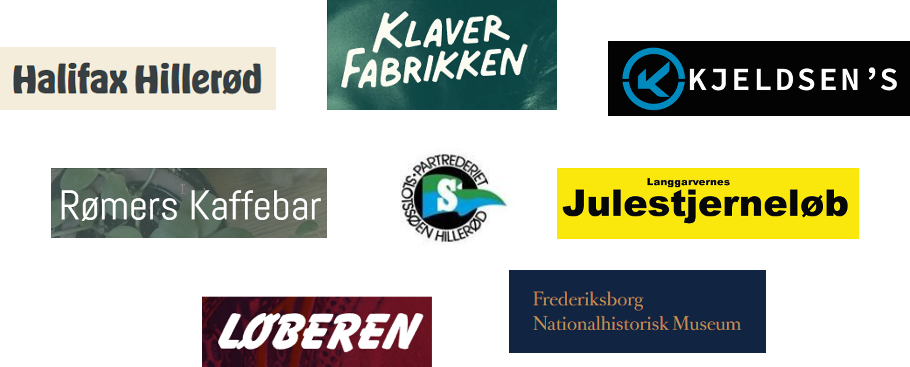

Tak til dette års fantastiske sponsorer!
Husk at støtte dem der støtter os!
Efter veloverstået ParforceTrail 2023, ser vi frem mod turen 26. og 27. oktober 2024.
Hvorfor vælge ParforceTrail?
ParforceTrail har efterhånden fundet frem til en opskrift på et løb som vi som arrangører er rigtig glade for. Det som vi kan love er at vi laver ruter som ikke er hamsterspor. Ikke at der er noget galt med at løbe flere omgange til et løb, men det er ikke en del af ParforceTrail. Derudover lover vi at der er strækninger som er off-trail, men med ekstra mange markeringer så man som løber kan fokusere på at sætte fødderne rigtig frem for at navigere. For dem der virkelig vil have noget for pengene tilbyder vi natløbet som foregår dagen før dagsløbet. Sidst men ikke mindst så tilbyder vi et veludstyret kagebord hvor vi med sikkerhed kan tilbyde den legendariske Snickerskage.
Natløb
ParforceTrails natløb har altid været forbeholdt en lille skare, men det er noget helt specielt at opleve ruten i pandelygtens skær. Og vi vil meget gerne byde flere velkommen til at deltage! Det betyder at det vil være muligt løbe ruten (den lange) igennem aftenen før dagløbet. Det vil være et meget low key arrangement uden chiptid osv, men hyggeligt og hard-core på den fede måde.
Dagsløb
Du kan vælge mellem to dagsløb søndag formiddag den 15. oktober: En lang rute på 20-25 km og en kort rute på 10-12 km. Ved dagsløbene er der tidtagning og præmier til hurtigste mænd og kvinder på begge distancer plus et veludstyret kagebord. Det er her vi med sikkerhed kan tilbyde den sagnomspundne Snickerskage.